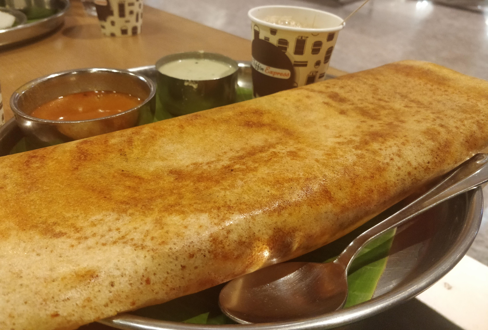

Feeding thousands of travellers, this restaurant is located at the main terminal at Kempegowda International Airport, Bangalore near gate 2. For travellers with a long journey ahead, a craving for dosa can easily be satisfied at this hygienic and prompt restaurant. If your travel is taking you away from your beloved city for a long time, this restaurant seems like a messiah. Tiffin Centre does not disappoint.
The Dosa
I ordered a masala dosa with a filter coffee. As at a lot of airports, the food was on the pricey side. It was served with coconut chutney and a tomato, onion sambar. It was served hot and in a traditional metal thali which was a nice addition to the ambience. The dosa was a thin rendition of this delicious snack with the perfect amount of potato stuffing. The chutney was lacking in flavour but the spicy sambar made up for it. Since the dosa wasn’t very oily, it left you wanting more as it sat lightly inside of you. Perfect for a queasy flight ahead, I guess.
The coffee was perfect. The flavour was rich, it wasn’t milky and the sugar was served separately. The coffee was definitely aimed at waking up travellers who probably had flights at odd times.
The Last Dosa
What fascinates me is the fact that this dosa is probably savoured more by travellers as they think of the coming days where they may not find dosas of the same stature as their home city. Do the chefs in the kitchen know this or think about it? I would like to think they do. This would result, I would like to think, in the dosas becoming more consistent and tended to while being carefully made. It’s a wonderful thought.
 Sometimes, the thoughts behind a simple dosa are consequential.